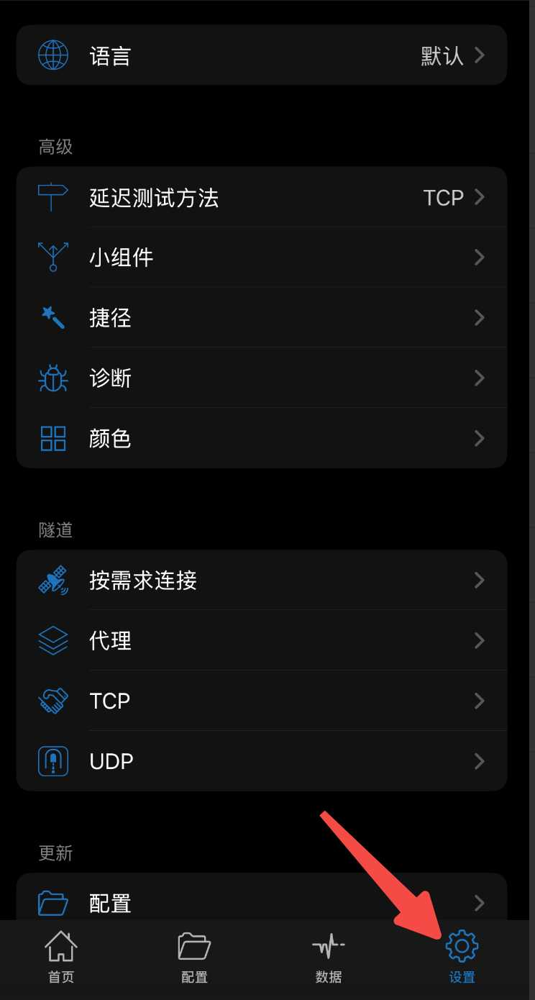

手机给电脑配置代理
手机设置 打开设置 设置IP地址，启用共享，注意这个ip地址设置跟电脑同一个局域网。 通过上面的步骤，手机的就启动的代理设置了代理服务为：192.168.0.29:1082。 电脑设置 以ubuntu为例，打开设置界面，打开代理。 将代理配置为手动模式，然后将所有的服务都代理到1
手机设置 打开设置 设置IP地址，启用共享，注意这个ip地址设置跟电脑同一个局域网。 通过上面的步骤，手机的就启动的代理设置了代理服务为：192.168.0.29:1082。 电脑设置 以ubuntu为例，打开设置界面，打开代理。 将代理配置为手动模式，然后将所有的服务都代理到1

准备 本文只作为个人安装简单记录，不做详细过程，如果是新手，可不必花时间再往下阅读。 准备一个16G以上的U盘，安装过程中跟实际的笔记本硬件会差异比较大。 下载ubuntu镜像 先下载ubuntu镜像：https://cn.ubuntu.com/download/desktop，
步骤1： 安装paralles tools 步骤2：执行install安装 报错处理 一通操作还是不行，原因是paralles tools没有匹配当前的内核版本，只能升级parallel 版本了。或者升级一个parallel desktop版本获取到parallel tools安
本文通过emqx REST API的方式来进行配置 创建一个API密钥 记录密钥的名称 API key是用户名称，Secret KEY是密码 浏览器登录验证 用户名就是 API Key，密码就是Secret KEY. 登录上之后就可以获取到设备的信息了。 可以参考： http:/

安装 安装 Node.js 和 npm：执行以下命令安装 Node.js 和 npm： yum install -y nodejs 创建工程 步骤1： 创建一个新的Node.js项目目录，并进入该目录： mkdir jsonp-server cd jsonp-server 步骤2
文档结构 <!doctype html> <html lang="en"> <head> ... </head> <body> ... </body> </html> 文档类型声明（）：声明文档使用HTML5标准。 html标签：设置文档的语言为英语（lang=\"en\"）。

交互流程 上图是完整的处理流程。 获取URL参数 const queryString = window.location.search; const urlParams = new URLSearchParams(queryString); const deviceId = ur

什么是dom DOM（Document Object Model）是一个编程接口，它将 HTML 或 XML 文档呈现为一个由节点和对象（这些节点和对象其实是文档的各种元素、属性和文本内容等）组成的树形结构。这个树形结构允许开发者使用编程语言（如 JavaScript）来访问、修

简介 搭建网站需要以下几个组件， Web服务器（如Apache、Nginx）：它是网页能够被访问的核心组件。当用户在浏览器中输入网站的域名或 IP 地址并请求访问网页时，Web 服务器软件会接收这些 HTTP 请求。负责从服务器的存储设备（如硬盘）中找到对应的网页文件（如 HTM

软件包中有完整CMakelists.txt include $(TOPDIR)/rules.mk PKG_NAME:=usrsctp PKG_VERSION:=0.9.5.0 PKG_RELEASE:=3 PKG_SOURCE:=$(PKG_NAME)-$(PKG_VERSION
Centos安装 配置emqx的源 curl -s https://assets.emqx.com/scripts/install-emqx-rpm.sh | sudo bash NaN. 安装emqx sudo yum install emqx -y NaN. 启动emqx s
安装 yum install coturn -y 配置 vim /etc/coturn/turnserver.conf listening-port=3478 #指定 coturn 监听的端口。默认的 TURN 协议端口是 3478，用于接收 TURN 客户端的连接请求。 tls
获取免费证书 下载证书 下载证书文件 解压后的文件如下 安装证书 步骤1： 登录服务器，找到证书路径，可以使用nginx -t查找证书路径。 [root@laumy conf.d]# nginx -t nginx: the configuration file /etc/ngin
前置条件：将wordpress设置为固定链接，参考前面章节https://www.laumy.tech/968.html 进行先设置。 外观->主题编辑器->function.php添加以下代码： add_action( 'rest_api_init', function ()

前置 先安装插件Yoast SEO,获取到XML 站点地图 Yoast SEO --》设置界面 --->API接口（拉到最下页面） 复制下面几个链接 然后登陆谷歌和百度添加到资源文件 谷歌 https://search.google.com/search-console/abou
仪表盘设置固定链接 wordpress仪表盘面板->设置->固定链接 这里选择自定义结构：htttps://your.domain.tech/%post_id%.html 网站支持伪静态 按照上面方法修改后，发现访问之前的文章出现404，那是没有设置网站环境支持伪静态，使用Ngi
首行缩进 `&ensp`; //半角的空格 `&emsp`; //全角的空格（中文的话，一般就直接用两个 即可） 着色 <span style="color:red;">红色文字</span> <span style="color:blue;">蓝色文字</span> <span

使用WP Editor.md 粘贴的图片模糊 修改插件的图片质量 /usr/share/nginx/html/wordpress/wp-content/plugins/wp-editormd/src/App/ImagePaste.php 首页不显示全文章，只显示标题和部分内容 /